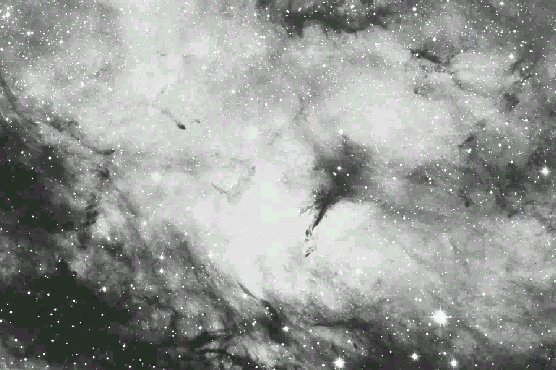

16x80:extremely large complex of irregular emission nebulae surrounded Gamma Cygni with six sections visible at 16x using an OIII filter. Overfills the 4° finder field! The most prominent section is an isolated patch NW of Gamma at the edge of the field and next are two parallel strips just E and SE of Gamma which have fairly sharp edges. Observation from Mt Rose using finder. - Steve Gottlieb